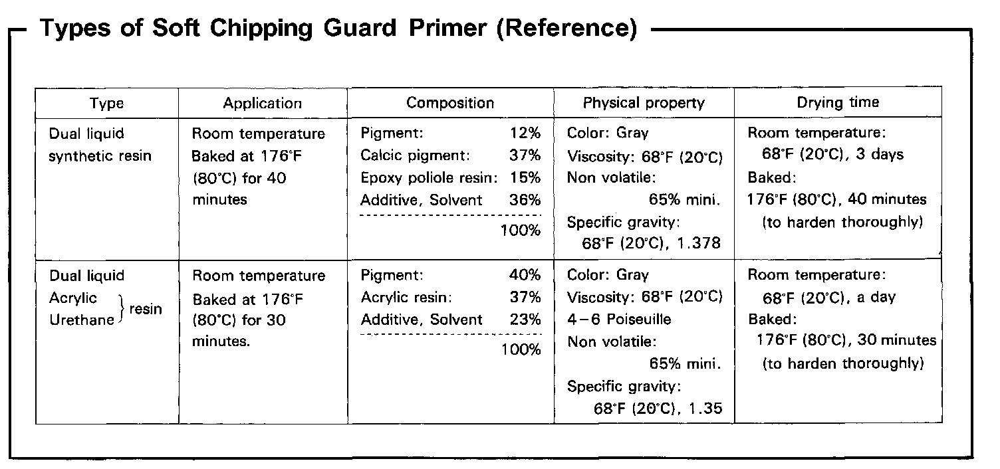

Operation CHARM
: Car repair manuals for everyone.
Home
>>
Acura
>>
1994
>>
Integra (RS, LS) L4-1834cc 1.8L DOHC FI
>>
Repair and Diagnosis
>>
Body and Frame
>>
Paint, Striping and Decals
>>
Paint
>>
Description and Operation
>>
Body Paint Repair
>>
Soft Chipping Guard Primer Coat
>>
Types of Soft Chipping Guard Primer (Reference)
Types of Soft Chipping Guard Primer (Reference)
